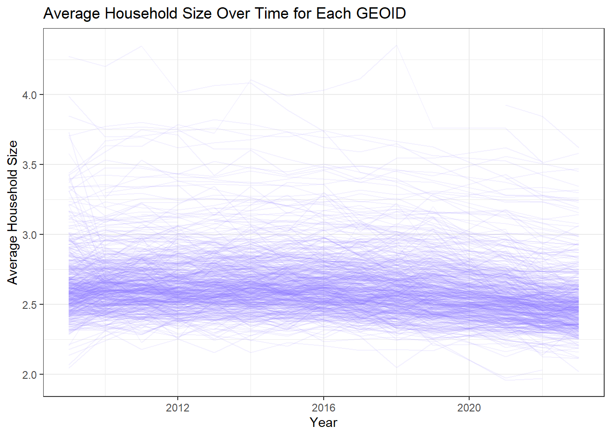

Which CBSA (by name) permitted the largest number of new housing units in the decade from 2010 to 2019 (inclusive)?
Code
T2.1<- PERMITS |>filter(year >=2010& year <=2019) |>slice_max(new_housing_units_permitted)|>inner_join(POPULATION, join_by(CBSA == GEOID))|>slice_head()|>pull(NAME)
New York-Northern New Jersey-Long Island, NY-NJ-PA Metro Area permitted the largest number of new housing units from 2010 to 2019
In what year did Albuquerque, NM (CBSA Number 10740) permit the most new housing units?
Code
#Creating a data table to see all of the new housing units #permitted for Albuquerque for the years documented. PERMITS |>filter(CBSA ==10740)|>format_titles() |>rename('CBSA'='Cbsa')|>datatable(options=list(searching=FALSE, info=FALSE))
We can see that in 2021, the NHUP is almost doubled from all of the other years.
If we leave out this outlier, in 2022, Albuquerque, NM had the highest number of new housing permits
Which state (not CBSA) had the highest average individual income in 2015?
Code
# total income for every CBSA in 2015T2.3_total_income <- INCOME |>filter(year ==2015)|>inner_join(HOUSEHOLDS, join_by(GEOID == GEOID))|>filter(year.y ==2015)|>group_by(GEOID)|>mutate(total_income = household_income * households)|>select(-NAME.y)|>mutate(state =str_extract(NAME.x, ", (.{2})", group=1))# total income for every stateT2.3_state_income <- T2.3_total_income |>group_by(state)|>summarise(state_total_income =sum(total_income))# total population in every stateT2.3_population_state <- POPULATION |>filter(year ==2015)|>mutate(state =str_extract(NAME, ", (.{2})", group=1))|>group_by(state)|>summarise(state_total_population =sum(population))#Dividing total state income by total state population to find the average #individual income by stateT2.3_highest_indivi_income <- T2.3_state_income |>inner_join(T2.3_population_state, join_by(state == state))|>mutate(average_individual_income = state_total_income/state_total_population)|>slice_max(average_individual_income)|>pull(state)
DC had the highest average individual income in 2015.
For Fun: Here is a datatable of all states’ average individual incomes!
Code
T2.3_state_income |>inner_join(T2.3_population_state, join_by(state == state))|>mutate(average_individual_income = state_total_income/state_total_population)|>format_titles()|>datatable(options=list(searching=FALSE, info=FALSE))|>formatRound(c('State Total Income', 'State Total Population', 'Average Individual Income'), digits =0)
What is the last year in which the NYC CBSA had the most data scientists in the country?
Code
#Creating a GEOID column in the Wages table. We are removing the "c" and#then adding a "0" to FIPS to join with GEOIDWAGES2 <- WAGES |>mutate(GEOID =paste0(gsub("C", "", FIPS), "0"))#Now we can join the wage columns with the other tables!#finding NYC's GeoIDPOPULATION |>filter(NAME =='New York-Newark-Jersey City, NY-NJ-PA Metro Area')|>pull(GEOID)# Now that we know that NYC's GEOID is 35620, lets query the wage2 dataset# to find the count of data scientistsT2.4<- WAGES2 |>filter(INDUSTRY ==5182)|># filtering for data professionalsarrange(desc(EMPLOYMENT)) |># ordering count of DP employmentselect(YEAR, EMPLOYMENT, GEOID)|>group_by(YEAR)|>filter(EMPLOYMENT ==max(EMPLOYMENT))|>filter(GEOID ==35620) |>head(n=1)|>pull(YEAR)
2015 was the last year in which the NYC CBSA had the most data scientists in the country
What fraction of total wages in the NYC CBSA was earned by people employed in the finance and insurance industries (NAICS code 52)? In what year did this fraction peak?
Code
#calculating the total wages from NYC GEOID 35620 T2.5_totalwage_nyc <- WAGES2 |>filter(GEOID ==35620)|>summarise(totalwage_nyc =sum(TOTAL_WAGES))|>pull(totalwage_nyc)#calculating total wages from NYC from Finance EmployeesT2.5_totalwage_nyc_finance <- WAGES2 |>filter(GEOID ==35620)|>filter(INDUSTRY ==52)|>summarise(totalwage_nyc_finance =sum(TOTAL_WAGES))|>#total wages from NYC from Finance Employeespull(totalwage_nyc_finance)T2.5_finance_fraction <- T2.5_totalwage_nyc_finance/T2.5_totalwage_nyc# it says 0.04086742, which is 4.08% idk that seems wrong, oddly low#now what year did the fraction year... we have to group by yearT2.5_nyc_year <- WAGES2 |>filter(GEOID ==35620)|>group_by(YEAR)|>summarise(totalwage_nyc =sum(TOTAL_WAGES))T2.5_nyc_year_finance <- WAGES2 |>filter(GEOID ==35620)|>filter(INDUSTRY==52)|>group_by(YEAR)|>summarise(totalfinancewage_nyc =sum(TOTAL_WAGES))T2.5_peak <- T2.5_nyc_year |>inner_join(T2.5_nyc_year_finance, join_by(YEAR==YEAR))|>mutate(year_fraction = totalfinancewage_nyc/totalwage_nyc)|>arrange(desc(year_fraction))|>head(n=1)|>pull(YEAR)
4% of total wages in the NYC CBSA was earned by people employed in the finance and insurance industries and this peaked in 2014.
Task 3: Initial Visualizations
The relationship between monthly rent and average household income per CBSA in 2009.
Code
T3.1<- RENT |>filter(year==2009)|>inner_join(INCOME, join_by(GEOID==GEOID))|>filter(year.y==2009)|>select(GEOID,monthly_rent,household_income, year.x)#plotting monthly rent and household income from 2009ggplot(T3.1, aes(x=monthly_rent, y=household_income)) +geom_point(color ="orange") +geom_smooth(method="lm") +xlab("Monthly Rent(USD$)") +ylab("Average Household Income(USD$)") +theme_bw() +ggtitle("Correlation of Monthly Rent and Average Household Income in 2009 by CBSA") +theme(plot.title =element_text(hjust =0.5, size =14, face ="bold",margin =margin(b =8, t =8)))
The relationship between total employment and total employment in the health care and social services sector (NAICS 62) across different CBSAs.
Code
T3.2_total<- WAGES2 |>group_by(GEOID,YEAR)|>summarise(total_employ =sum(EMPLOYMENT))|>ungroup()T3.2_health <- WAGES2 |>filter(INDUSTRY ==62)|>group_by(GEOID, YEAR)|>summarise(health_employ =sum(EMPLOYMENT,na.rm =TRUE))|>filter(health_employ !=0)|>ungroup()#creating a joined dataframeT3.2_employment<- T3.2_total|>inner_join(T3.2_health, join_by(GEOID,YEAR))T3.2_ratio <- T3.2_employment |>mutate(ratio = health_employ/ total_employ)ggplot(T3.2_ratio, aes(x = YEAR, y = ratio, group = GEOID)) +geom_line(alpha =0.3, color ="cadetblue4") +scale_y_log10(labels = scales::comma) +# log scale helps with large variationxlab("Year") +ylab("Employment Ratio (Health Care: Total") +labs(title ="Ratio of Total Employment to Health Care & Social Services Employment",subtitle ="Each line represents a different CBSA (GEOID)") +theme_bw() +theme(legend.position ="none",plot.title =element_text(hjust =0.5, face ="bold"))
The evolution of average household size over time. Use different lines to represent different CBSAs.
Code
POPULATION |>inner_join(HOUSEHOLDS, join_by(GEOID, year)) |>mutate(avg_housesize = population / households) |>ggplot(aes(x = year, y = avg_housesize, group = GEOID)) +geom_line(alpha =0.1, size = .5,color ='lightslateblue') +xlab("Year") +ylab("Average Household Size") +labs(title ="Average Household Size Over Time for Each GEOID") +theme_bw()

Building Indices of Housing Affordability and Housing Stock Growth
Task 4: Rent Burden
Baseline Value: The national rent burden average = 0
Code
#Joining the INCOME and RENT tables and creating the rent_burden ratiorent_income <- INCOME |>mutate(monthly_income = household_income/12)|>inner_join(RENT, join_by(GEOID, year))|>select(GEOID, year, NAME.x, monthly_income, monthly_rent)|>mutate(rent_burden = monthly_rent/monthly_income)#Standardization and Scaling/Transformation:#mean national rent burden rationational_rb_mean <- rent_income|>summarise(national_avg =mean(rent_burden))|>pull(national_avg)#standard deviation of the national rent burden rationational_rb_sd <- rent_income|>summarise(national_sd =sd(rent_burden))|>pull(national_sd)#Z score column comparing the rent burden of each geoid and year to the SD rb_standardized <- rent_income |>mutate(rb_zscore = (rent_burden - national_rb_mean) / national_rb_sd)
Rent Burden in Burlington, VT Metro Area Over Time